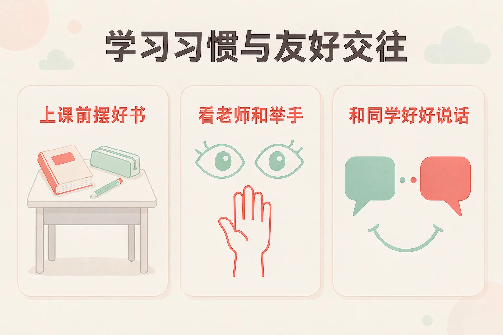
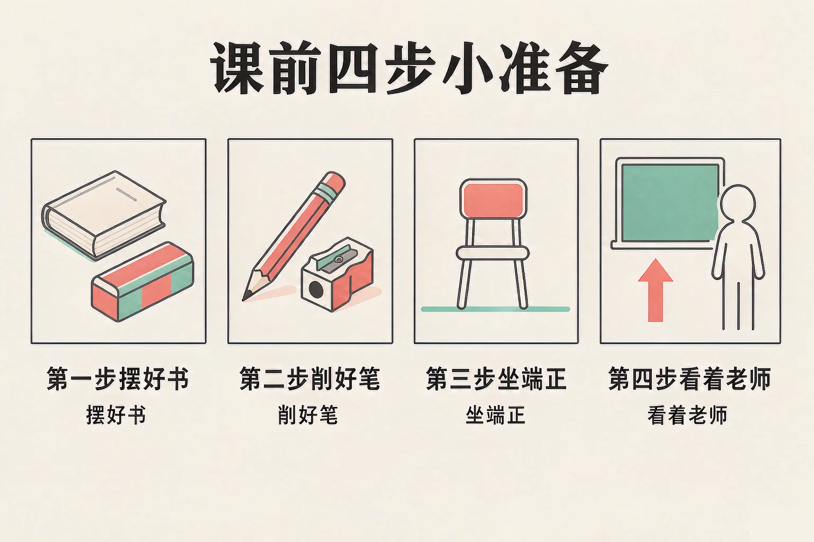
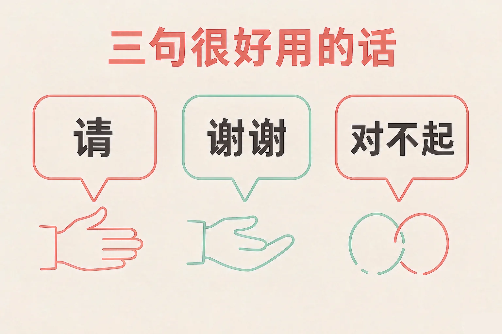

Gallery
v1.0.0 · skill v7.22.0
小学一年级 · 学习辅导
为什么有的同学上课很轻松，老师讲的话都能记住？

选一个你真正想知道的问题，后面的活动都会围着它转。
选择或输入后，这节课会围绕你的问题展开。
先凭直觉选一个，选完立刻看到解释——错了也没关系，正好知道要重点听哪里。
1. 上课前，桌角上摆什么最合适？
桌角放着上课要用的东西，一伸手就能拿到，心里也踏实。错因提醒：常见错误是把「我喜欢的」和「上课要用的」搞混了——喜欢的东西，回家再玩就好。
2. 我想借同桌的橡皮，怎么做比较好？
先说一句「能借我用一下吗」，又礼貌又省事。错因提醒：不要把「反正他也会同意」和「可以先拿」搞混——问一问，是尊重他的东西。
3. 和同学一起玩的时候，两个人都想玩同一个球，你会：
商量一句，两个人都能玩到，还能玩得更久。错因提醒：容易误认为「先拿到就是我的」——抢过来的东西，玩起来也没那么有意思。
为什么要学这一课？
我们已经知道上课要坐好、听老师说话（And）；可是有时候书没带齐、笔找不到，一节课就在翻书包里过去了，老师讲的那句话也没听清（But）；所以我们要先学几件特别小的准备动作，把它们变成习惯，上课就轻松多了（Therefore）。
好习惯不是大道理，它是三件很小的事。做到一件，就是做好一次。
上课前
把课本和铅笔盒摆到桌角，水杯放进桌洞，人坐正。
上课时
眼睛看着老师，耳朵认真听，想说话先举手。

🔍 深层理解 换个角度再看一遍这件事，看看能不能说出背后的原理。
看见它：学习习惯不在天上，它就在桌角上：一本摆好的书、一支削好的笔、一个坐正的小身影。
解释它：为什么眼睛看着老师，就听得更清楚？因为看和听是配合的——看着说话的人，注意力就跟着他的话走。
迁移它：这几件小事到哪里都好用：在家写作业、在兴趣班上课，先准备好、再专心听，一样省力气。
点一个你打算做到的动作，教室里就会亮起一盏灯，还会告诉你这件事有什么好处。三盏灯全亮，就说明你今天准备好了。
点一点上面的动作，看看灯会不会亮。
和同学、和老师好好相处，只要几句话就够了。它们很短，可是说出来，别人心里就舒服多了。

有的同学误认为「很小的事不用说谢谢」，「不认识的人也不用打招呼」。其实越是这些小事，说出来越让人愿意和你在一起。还有同学把「借」和「给」搞混——借来的东西，用完要记得还。
🔍 深层理解 换个角度再看一遍这件事，看看能不能说出背后的原理。
看见它：友好交往的本事，藏在几句话里：请、谢谢、对不起、我来帮你。
比较它：同样是想看同一本绘本：抢过来，只有一个人看一会儿；商量一下，两个人都能看到最后。
迁移它：在家里、在楼道里、在公交车上，这几句话也一样好用。别人会觉得，和你在一起很舒服。
先点一个课间会遇到的情境，再从三个做法里选一个。选得好会告诉你为什么，选得不太合适也会告诉你还可以试试什么。
先点一件课间会遇到的事。
情境：小雨上一年级，她想知道「怎么上课才听得清楚」。请你陪她走一遍这一节课。
有的同学误认为「举手太慢，直接说更快」。可你直接说的时候，老师正在讲的那句话就被打断了，全班都要重听一遍。小雨的办法是：先举手，等老师看到你，再说——这样既说了自己的话，也没耽误别人。
说给同桌听：小雨这四步里，你哪一步已经很熟练了？哪一步还想明天再试一次？
先凭直觉选一个，选完立刻看到解释——错了也没关系，正好知道要重点听哪里。
1. 下面哪句话说得对？
眼睛看着老师，注意力就跟着老师的话走。错因提醒：常见错误是误认为「不出声就没影响」——低头玩东西的那一会儿，老师讲的那句话就漏过去了。
2. 同学帮你把掉在地上的铅笔捡了起来，你可以说：
一句谢谢，让人愿意和你继续做朋友。错因提醒：不要误认为「小事不用说谢谢」——说出来，对方才知道你收到了这份好意。
3. 你不小心碰掉了同桌的铅笔盒，下面哪个做法更合适？
说声对不起，再一起捡起来，事情很快就过去了。错因提醒：容易把「没被看见」当成「没发生」——主动说对不起，是很有担当的做法，同桌也会更信任你。
两个人都不高兴的时候，接下来怎么做才对呢？下面四步被打乱了，请你按合适的顺序一步一步点出来。
我排出来的顺序
还没有排出第一步。
请点出你认为的第一步。
排完之后，想一想：
这四步里，哪一步最难做到？如果第一次没做好，还可以怎么办？
再把它画出来：四个小方框，用箭头连起来，就是你的「和好小图」。
先凭直觉选一个，选完立刻看到解释——错了也没关系，正好知道要重点听哪里。
1. 上课的时候，你有一个问题很想问，你会：
举手问，老师听得见，别的同学也还在听课。错因提醒：不要让「怕打扰老师」变成「什么都不问」——举手，就是把打扰换成了合适的方式。
2. 课间，同桌不小心摔倒了，你会：
一句问候，就能让同学心里暖一下。错因提醒：不要把「不知道该说什么」当成「什么都不做」——只要问一句你还好吗，就已经很好了。
3. 同学把橡皮借给了你，你用完了，你会：
用完就还，再说声谢谢，下次他还愿意借给你。错因提醒：常见错误是把「借」和「给」搞混——借来的东西，用完要想着还，这是最简单的守信。
还要记牢一件事：刚开始做不到、不好意思开口，都是很正常的。今天做到一件，明天再做到一件，慢慢地它们就变成你的习惯了。
给别人讲一遍：请用「摆好、举手、谢谢」这三个词，说清楚你今天在学校做得好的一件事。
再动一动手：画一画你的桌角——哪边放课本，哪边放铅笔盒，用三个小方框标出来。
三层练习，做完第一、二层就算通关；第三层留给愿意继续探索的同学。
⭐ 基础巩固（必做）
⭐⭐ 能力应用（必做）
⭐⭐⭐ 迁移挑战（选做）
左边是学它之前要先会的，右边是学会之后可以继续探索的，下面是同一领域的伙伴知识。
图谱正在加载：首次进入需下载知识索引（约 1–3 秒），加载完成后本行会自动消失。